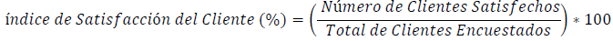
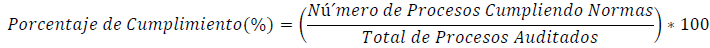
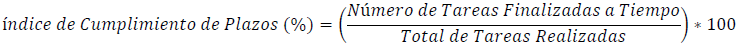
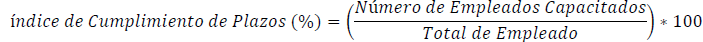
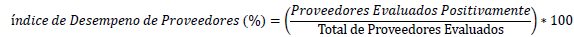

|
OC-005 | OBJETIVOS DE LA CALIDAD
|
Ver. 000
|
|
|
Creado por EGC | Aprobado por CEO
|
Fecha: 01.12.2024
|
Contenido
OC-001: Aumentar la Satisfacción del Cliente ...........................................................................................................................
OC-002: Garantizar el Cumplimiento Normativo y Legal .............................................................................................................
OC-003: Mejorar Continuamente los Procesos ..........................................................................................................................
OC-004: Incrementar la Eficiencia Operativa .............................................................................................................................
OC-005: Fortalecer la Competencia y Formación del Personal ...................................................................................................
OC-006: Mejorar la Relación con Proveedores ..........................................................................................................................
OC-007: Asegurar una Comunicación Transparente y Eficaz ......................................................................................................
Historial de Versiones ............................................................................................................................................................
OC-001:
Aumentar la Satisfacción del Cliente
Política relacionada: Enfoque en el Cliente Indicador:
Índice de Satisfacción del Cliente Descripción
del Indicador: Evalúa la percepción de los clientes sobre
la calidad y conformidad de los productos y servicios proporcionados,
asegurando que cumplan y superen sus expectativas.
Cálculo del Indicador:

Fuente del Indicador: Encuestas de satisfacción aplicadas tras la prestación del servicio o entrega de productos.
OC-002:
Garantizar el Cumplimiento Normativo y Legal
Política relacionada: Calidad y Conformidad Indicador:
Porcentaje de Cumplimiento Normativo Descripción del Indicador:
Monitorea la conformidad con normas, regulaciones y estándares
aplicables a los productos, servicios y procesos de la organización.
Cálculo del Indicador:

Fuente del Indicador: Auditorías internas, revisiones externas y registros de cumplimiento legal.
OC-003:
Mejorar Continuamente los Procesos
Indicador: Número de Iniciativas de Mejora Implementadas
Descripción del Indicador: Mide el número de iniciativas
aplicadas para optimizar procesos, aumentar la eficiencia y garantizar
la satisfacción del cliente.
Cálculo
del Indicador:
Número de Iniciativas de Mejora=Total de Iniciativas Implementadas
Fuente del Indicador: Registros del sistema de gestión
de calidad (SGC).
OC-004:
Incrementar la Eficiencia Operativa
Indicador: Índice de Tareas Completadas a Tiempo Descripción
del Indicador: Monitorea la capacidad de la organización para
cumplir con los plazos establecidos en la entrega de servicios y productos,
reduciendo riesgos operativos.
Cálculo del Indicador:

Fuente del Indicador: Registros operativos de tiempos de entrega.
OC-005:
Fortalecer la Competencia y Formación del Personal
Indicador: Porcentaje de Personal Capacitado Descripción
del Indicador: Evalúa la proporción de empleados que reciben
capacitación para garantizar que poseen las competencias necesarias
para cumplir con los estándares de calidad de la organización.
Cálculo del Indicador:

Fuente del Indicador: Registros de capacitación del personal.
OC-006:
Mejorar la Relación con Proveedores
Indicador: Índice de Desempeño
de Proveedores Descripción del Indicador: Mide el nivel de cumplimiento
de los proveedores en cuanto a calidad, tiempos de entrega y conformidad
con los requisitos establecidos.
Cálculo del Indicador:

Fuente del Indicador: Evaluaciones y auditorías de desempeño de proveedores.
OC-007:
Asegurar una Comunicación Transparente y Eficaz
Indicador: Índice de Comunicación Eficaz
Descripción del Indicador:Monitorea la eficacia de las comunicaciones internas y externas, asegurando que la información llegue de manera clara y oportuna a todas las partes interesadas. Cálculo del Indicador:
| Versión | Fecha | Asiento | Aprueba |
| 000 | 01.12.2025 | Original | CEO |